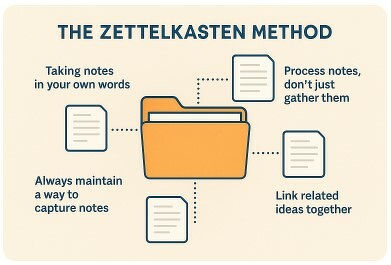
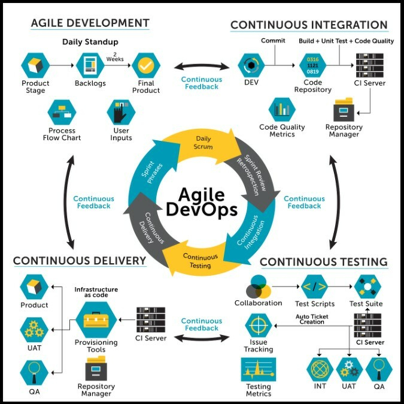
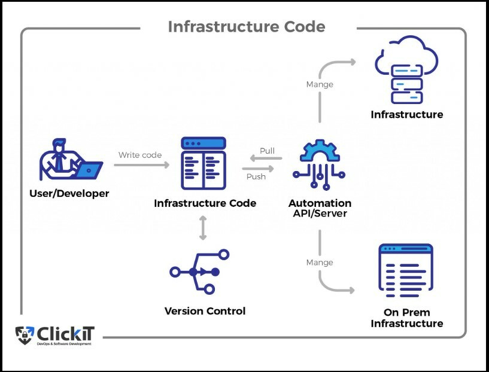

Taking notes in your own words—whether while reading, listening to recordings, or watching videos—forces deep thinking and true understanding.
Always maintain a consistent method for capturing notes, whether physically or digitally.
Don’t simply gather notes; process them. This is what leads to real knowledge.
Connecting and linking that knowledge creates the foundation for limitless growth.
Over the last two decades, DevOps has evolved from a cultural movement into a strategic engine powering the world’s most innovative companies. What began as an effort to close the gap between developers and operations teams has now expanded into a sophisticated ecosystem powered by automation, cloud-native technology, and increasingly — AI. Understanding the evolution of DevOps is essential for anyone leading technology teams, building digital products, or shaping engineering strategy.
From Agile Roots to Continuous Delivery
Before DevOps, Agile transformed how teams built software — shifting from long development cycles to short, iterative sprints. But Agile had a limitation: it improved building software, not deploying it. DevOps emerged to close that loop. With DevOps, development and operations aligned around shared goals: • Faster delivery • Lower risk • Continuous feedback • High collaboration This shift enabled organizations to move from “code complete” to “value delivered” — continuously.
The Cloud Era: Infrastructure Becomes Code
The rise of AWS, Azure, and Google Cloud reshaped DevOps completely. Suddenly, infrastructure wasn’t physical — it was software. Infrastructure-as-Code (IaC) tools like Terraform and CloudFormation enabled teams to: • Provision systems automatically • Version-control entire environments • Reduce configuration drift • Scale with a single command This era moved DevOps from “faster releases” to “predictable, reproducible, and scalable systems.”
Microservices & Containers: DevOps Gets Distributed
The shift to microservices, Docker, and Kubernetes further accelerated DevOps transformation. Software was no longer one big monolith — it became hundreds of small, interdependent services. This demanded: • Automated deployments • Advanced monitoring and observability • Strong CI/CD pipelines • New architecture patterns DevOps evolved again — from a team culture to a platform capability.

The Power of the Zettelkasten Method: Thinking, Writing, and Productivity Reimagined
The Zettelkasten method, inspired by the work of Niklas Luhmann, is more than just a note-taking technique—it is a tool for thinking. At its core is a simple principle: one idea per card. Each note is written in your own words, ensuring that real understanding takes place as you translate ideas into personal language. This constant rewriting and processing deepens comprehension and gives your thinking a clearer, more structured form. When your thoughts are captured and connected, your mind gains an expressway for creativity and insight.
A Structured Approach to Note-Taking
Using the Zettelkasten system requires a shift in how you interact with information. It encourages you to build a personal ecosystem where notes are created, stored, and revisited through intentional structure. This daily interaction—linking, reviewing, refining—brings clarity and organization to the entire note-taking process. Instead of collecting scattered fragments, you build a growing network of ideas that can always be expanded or reconnected.
Writing Becomes Easier and More Modular
One of the greatest strengths of Zettelkasten is how it transforms writing into a modular process. Since each note contains a single idea, you can rearrange, combine, or use them to support different arguments with ease. Writing no longer begins with a blank page—because the writing is already happening during your research. Each note becomes a building block you can effortlessly assemble into larger pieces of work. This simplifies the writing process and turns complex projects into manageable parts.
Your External Brain: Memory Without Overload
A Zettelkasten serves as an external memory, freeing you from the pressure of holding everything in your mind. By storing ideas in a connected system, you gain better perspective and can switch between tasks without losing momentum. This creates flow, reduces mental strain, and allows you to focus on whatever is most important in the moment. It supports long periods of concentration and makes productivity feel natural—almost effortless.
Niklas Luhmann described working in a way that follows the path of least resistance:
“I only do what is easy. I only write when I immediately know how to do it. If I falter for a moment, I put the matter aside and do something else.” This adaptability lies at the heart of the method. Your notes enable you to pick up right where you left off or move to a different task without friction. By matching your work to your energy and mood, the system becomes like a river—flowing toward what is easiest and most aligned in the moment.
Effortless Productivity and Deeper Thinking
Because you no longer need to juggle every detail mentally, you can handle more complex tasks with ease. Linking notes allows you to see relationships, patterns, and insights that would be difficult to retain in your head alone. This kind of supported thinking allows you to solve problems more effectively, generate meaningful ideas, and maintain productivity without burnout. The Zettelkasten system becomes a powerful partner—helping you think better, create better, and work with greater fluidity.
Started posting on LinkedIn and X on Saturday, 29th November 2025. The plan is to post on both every Tuesday and Friday going forward.
Starting with setting up my homelab on a laptop.
Getting started with Docker, using Docker Compose, and Dockerfile.
I tried setting up the following mini projects:
Portainer- Docker management dashboard (viewing containers, images, networks, volume and using docker compose)
Redis database container
PostgresSQL database container
Using FastAPI to connect a simple app running on a container, which is also connected to the database containers.